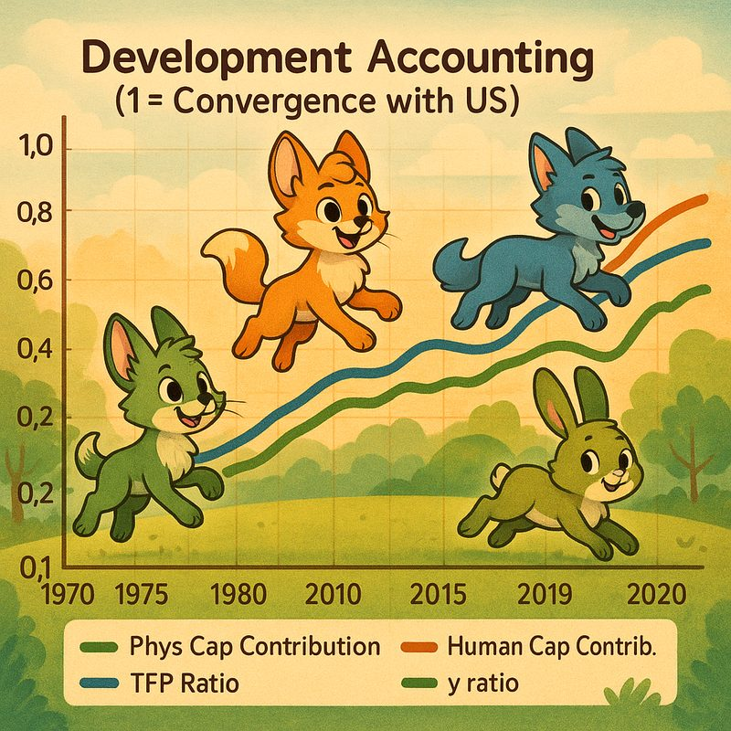

The Dissertation / Chapter V
Chapter V
Convergence with the Colossus
The macroeconomic transformation from a nation in dire straits to an economic powerhouse is clearly reflected in development accounting data when compared to the United States. Following the Korean War, over 40% of the population lived in poverty, with unemployment and underemployment ravaging the economy. In 1970, South Korea's output per worker was a mere 11.53% of US levels.
From the 1940s to the 1960s, South Korea relied heavily on US aid, though agricultural aid competed with domestic industry and impeded potential growth. In 1961, facing a US threat to cut off aid unless the economy was reformed, then-leader General Park Chung-hee turned to an export-led growth strategy (Kim, 1991): devaluing the won for competitive pricing abroad, creating tax incentives, and — in a critical if risky 1965 move — raising deposit interest rates to 24% per annum, which dramatically increased savings and capital accumulation.
In the 1970s the state pushed into heavy and chemical industries. The push initially faltered, gaining true urgency only with national security threats: North Korean infiltrations and the Nixon administration's withdrawal of US troops (Horikane, 2005). While the North followed Juche self-reliance, the South took the opposite route — exports — to build both its defense and economic capabilities. As a result, South Korea's TFP relative to the US began rapid growth, from 30.72% in 1970 to over 40% within a few years.

A side effect of targeted industrial investment was the creation of chaebols — family-owned conglomerates such as Samsung and LG, nurtured from the 1970s by subsidized credit from government-owned banks (Kim, 1991). As of 2024, the top four conglomerates account for roughly 40% of GDP (Yonhap, 2024). Interest rate differentials favored exporters and heavy industry; yet through the 1980s budgets were kept balanced and debt avoided, and as the economy matured, the strongest incentives were gradually phased out.
Trade policy completed the design. South Korea joined GATT in the 1970s, opening European and North American markets, while protectionist tariffs initially shielded domestic industry — liberalized only gradually as foreign currency earnings grew. Membership followed in APEC (1989), the WTO (1995), and the OECD (1996). By 2010, South Korea was the world's 7th largest exporter, with over $1 trillion annually (KCCUK, 2020).
The scoreboard today: physical capital per worker has closed the gap with the US, and human capital per worker has surpassed it — consistent with the immense rise in average education levels. Output per worker, 11.53% of US levels in 1970, now stands at 59.21%. The laggard is Total Factor Productivity: after climbing steeply until roughly 2000, the TFP ratio plateaued and even slipped in the 2010s, sitting at 60.93% as of 2023. Candidate explanations include structural rigidities, a shortage of breakthrough innovation, and the shock of adapting to the digital economy (Bergeaud et al., 2017).
South Korea grew massively in less than a century. A long-term growth mindset — investing in domestic industry, reforming trade, and sharpening the skills of its workforce — made the country a genuine growth miracle. The population crisis and cost of living threaten a potential downturn, but the nation remains in a categorically better position than in the 1960s. Whether growth is maintained, the author notes, will be interesting to analyze — presumably by him.